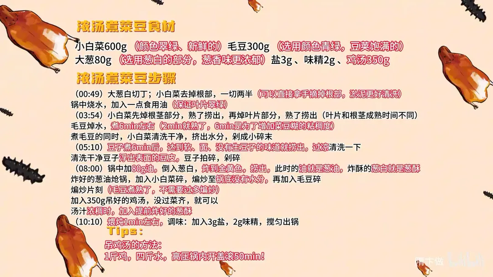

浓汤菜豆糊
隋卞一做。小白菜 600g、毛豆 300g，毛豆要煮足 6 分钟再剁碎，为的是让豆糊出粘稠度；小白菜焯后挤水剁末，葱白炸成葱油与葱酥，最后加 350g 鸡汤炖 1 分钟成糊。
原视频：https://www.bilibili.com/video/BV1nbHSeXEaP
食材
小白菜、毛豆 等 7 样
| 类别 | 用料 | 用量 |
|---|---|---|
| 主料 | 小白菜 | 600g（颜色翠绿、新鲜的） |
| 主料 | 毛豆 | 300g（颜色青绿、豆荚饱满的） |
| 辅料 | 大葱 | 80g（选葱白部分，葱香味更浓郁） |
| 用油 | 油 | 80g |
| 调料 | 盐 | 3g |
| 调料 | 味精 | 2g |
| 汤 | 鸡汤 | 350g |
步骤
- 切配：大葱白切丁；小白菜去掉根部，一切两半（可以直接拿手撕掉根部，淤泥更好清洗）。锅中烧水，加入一点食用油，让绿叶菜保持翠绿。
- 焯菜：小白菜先焯根茎部分，熟了捞出，再焯叶片部分，熟了捞出（叶片和根茎成熟时间不同）。
- 煮毛豆：毛豆焯水，煮 6 分钟左右（2 分钟其实就熟了，煮 6 分钟是为了增加豆糊的粘稠度）。
- 剁菜末：煮毛豆的同时，小白菜清洗干净，挤干水分，剁成小碎末。
- 过凉：豆子煮 6 分钟后，达到软、面、没有生豆子的味道就捞出，过凉清洗一下。
- 剁豆碎：清洗干净豆子，剥出表面的豆皮，豆子拍碎、剁碎。
- 炸葱油：锅中加 80g 油，倒入葱白，炸到金黄色捞出，此时的油就是葱油，炸酥的葱白就是葱酥。
- 煸炒：炸好的葱油烧开，加入小白菜碎，煸炒至锅底没有水分，再加入毛豆碎，煸炒片刻（毛豆已经煮熟，不需要过多煸炒）。
- 加汤：加入 350g 吊好的鸡汤，没过菜即可。
- 调味出锅：汤汁滚烫时，加入提前拌好的葱酥，炖煮 1 分钟左右，加入 3g 盐、2g 味精，搅匀出锅。
小贴士
- 吊鸡汤的方法：1 斤鸡、四斤水，高压锅内开盖煮 50 分钟。
- 毛豆煮的时间是这道菜的关键：2 分钟熟、6 分钟出粘稠度，别图省事。
讲解要点
难度：★★★☆☆（步骤都是家常动作，难在焯菜火候和毛豆煮制时间这两处细节）
为什么这么做
- 葱只用葱白：葱绿和葱的粘液炸完微苦，葱白炸出的葱油才香，颜色也更干净。
- 选料：小白菜挑叶柄长、颜色浓绿、叶片无斑点的，毛豆挑豆荚青绿、凹凸有致、颗粒饱满的：新鲜度直接决定成菜的脆绿和豆香；剥好的豆品质不确定，自己剥才保证都是嫩豆。
- 焯菜水要宽、底火要冲、水大开，并加一点油：迅速烫熟才能保住翠绿和清鲜，油膜护色；火小把菜闷着，菜就「臭」了。
- 根茎先焯、叶片后焯：两者成熟时间不同，一锅下不是根生就是叶烂。
- 焯完立刻冲凉、挤干水：锁住颜色，也让后面煸炒不出水，成菜不水塌。
- 毛豆煮足 6 分钟：2 分钟就熟，但 6 分钟才软面、豆香足，糊的粘稠度就靠豆子本身的淀粉，不用勾芡。
- 小白菜先煸干水汽、毛豆已熟只稍煸，葱酥最后才放：锅底没水汽味道才浓，毛豆多煸只会散；葱酥久煮会软掉失香，最后放才增炝锅味和层次。
容易翻车
- 火小、水不开就下菜，菜捂黄、发「臭」，颜色味道全没了。
- 焯完不冲凉、不挤水，下锅出水，炒成汤。
- 毛豆只煮 2 分钟就捞，豆糊稀，稠度起不来。
- 拍豆子时刀柄朝外、刀刃角度不对，豆子往后溅，还拍不碎。
- 盐只放 3 克仍偏淡：香味出不来、吃着没回味，可以再补 0.5 克。
原片尾卡

原片文案
AI 字幕校准稿
这些年徒弟教了不少，只教出来一个。来吧，王妹。什么仙人来给你订的菜——菜豆糊，正好今天教教我们菜豆糊到底应该怎么做。
小白菜、毛豆，主要就是这两个原料。大葱拿过来，那是小料。先把葱切了。别紧张——所有的流程在你头脑当中应该很清晰才能行。
葱咱们选用葱白的部分，因为师傅教导我，葱白的部分葱香味更浓郁；葱叶的部分、葱绿的部分，还有那个葱的粘液，炸完之后有点微苦，肯定没有葱白效果好。
小白菜要选叶柄长、颜色浓绿、叶片没有斑点的这种，因为这种小白菜在市面上是最新鲜的。把根茎去掉，中间改一刀，因为锅放这个有点大。
鲜毛豆就选这种颜色青绿的豆荚，凹凸有致、颗粒比较饱满的。在家做的话，市场也有卖那种剥好的，那个品质不确定；我们自己剥的话，就确定它都是嫩豆。
咱们先把水烧上，趁着烧水的功夫把小白菜冲洗一下。水烧开，焯青菜水要宽一点，底火要冲，迅速烧开，保持绿叶菜的翠绿，而且味道是清新的。你要是火小，这个菜搁着捂着且不热的，它就是臭的。
水烧开加入一点食用油，先烫根茎部分，稍微煮一下，然后放入叶片部分，因为成熟的时间不一样。焯完水咱们抓紧给它冲凉，小白菜冲凉之后挤干水分。
把剥好的新鲜毛豆米搁里边煮上，大概煮 6 分钟。小白菜切 0.5 厘米长段，切好之后有的不太均匀，咱们可以再剁一下，剁的目的是让小白菜碎一点。
6 分钟到了，咱们尝一下口感。家里面的火，开锅下料之后 5 分钟就熟了；6 分钟是为了让它达到一个软面的口感。接下来把豆子过凉。
咱们把这豆粒先拿刀拍一下，然后剁碎。这一步家里如果有破壁机的话，直接用破壁机打碎就可以了。
咱们先下入食用油，大概一勺，炸一个葱油，然后下入大葱，炸葱酥。什么叫葱酥？就是把这个葱炸到干香、酥脆。小火慢慢煸就可以，颜色金黄，葱油也留着。
加入刚才炸葱出的葱油，小火再放一些切好的葱花，煸到金黄色，然后下入小白菜，翻炒一下。这步要煸掉小白菜的水汽——不用太干，煎到锅底没有多余的水分就行。这个时候加入提前准备好的毛豆碎，本身毛豆已经煮熟了，就不需要再过多地煸它。加入提前调好的鸡汤，没过菜齐，然后改中小火慢慢煨。这个粘稠度是靠毛豆本身含有的淀粉，不用勾芡。
现在可以调个味了。盐呢，经过上次翻车之后试验了很多遍，放 3 克就可以；味精大概 2 克就够，这个不需要过多的调味料。尝尝味，果然试验多了还是比较稳定的。
这个汤汁比较浓稠了，加入提前炸好的葱酥，增强炝锅味，增强口味的层次感。好了，现在可以出锅了。
我尝一下。入口之后是一个简单的咸鲜味，首先是豆子和青菜那种香味，然后是汤的香味，整体的融合度还是不错的，汤的香味也没有盖过蔬菜的味道，做的是对的，很不错。盐呢谨慎了一点，这点再加个 0.5 克应该就差不多。这个其实都是最后上菜，客人的舌苔也会稍微有点偏厚，咸味不够的话香味不会出来，而且吃着就没有回味。整体不错，确实比上一次做得好。
挺好吃的。鸡汤的鲜味是带着的，同时鸡汤里面也有那个豆香和蔬菜的香味，这三个是不冲突的。但我觉得最典型的还是那个葱香味，葱香味等于说把整个很平和的一个调子又小小地升华了一下，味道又有些层次感。
那今天过关了吗？过了，今天过了。跟徒弟交代：怎么保证好品质，千万别飘。